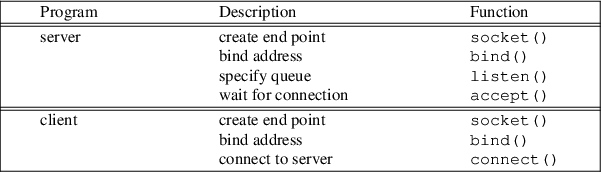
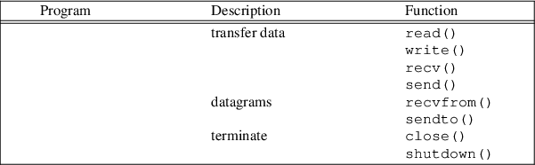

Index
1. Interprocess communcation
- in Operating systems we find there
are a number of mechanisms used for interprocess
communication (IPC)
- the IPC mechanisms can be divided
into two groups, those which work well using shared memory
and those which work with non shared memory
- some common
methods of IPC are: sockets, semaphores and mailboxes
-
sockets and mailboxes are normally used by non shared memory
programs
- ie client and server on
different machines
2. Interprocess communication in shared memory systems
- semaphores are more appropriate for
multiple processes sharing some common memory
- we will
be covering a semaphores and message passing after
networking with sockets
- message passing
- can be used in shared memory
systems
3. Interprocess communication in non shared memory systems
- network sockets (Berkeley and System
V Transport Layer Interface)
- work well
with programs (clients and servers) which do not share the
same memory
- message passing
-
can be used in non shared memory systems
4. Berkeley Sockets
- the Berkeley interface to sockets
ultimately gives the programmer a file descriptor on both
client and server which can be both read from and written to
- this is elegant as the user application can map its
functionality onto basic file primatives: read, write
-
Berkeley sockets are available in many languages and
available on most operating systems
-

-

5. Connection oriented sockets (TCP sockets)
6. Consider Python Code for a TCP Server
-
tcpserver.py
#!/usr/bin/python
from socket import *
myHost = ""
myPort = 2000
# create a socket
s = socket(AF_INET, SOCK_STREAM)
# bind it to the server port number
s.bind((myHost, myPort))
# allow 5 pending connections
s.listen(5)
while True:
# wait for next client to connect
connection, address = s.accept()
data = connection.recv(1024)
while data:
connection.send("echo -> " + data)
data = connection.recv(1024)
connection.close()
7. Consider Python Code for a TCP client
tcpclient.py
#!/usr/bin/python
import sys
from socket import *
serverHost = "localhost"
serverPort = 2000
# create a TCP socket
s = socket(AF_INET, SOCK_STREAM)
s.connect((serverHost, serverPort))
s.send("Hello world")
data = s.recv(1024)
print data
8. Testing the code
- open up an
editor and type in the server Python code
- save it as
tcpserver.py
- now open up a
terminal and type
$ python
tcpserver.py make a note of the FQDN of the server
open up another editor and type in the client Python
code save it as tcpclient.py
open up a terminal
$ python tcpclient.py notice that both
client and server are working on the same machine
change the variable serverHost in
tcpclient.py to the FDQN of your
neighbours machine - and run your client
again!
9. Application protocol using TCP
- TCP is used by
many application level protocols
- a
very common one is http
- let us build a tiny web
server in Python!
10. Tiny web server in Python
mywebserver.py
#!/usr/bin/python
from socket import *
myHost = ""
myPort = 2000
# create a socket
s = socket(AF_INET, SOCK_STREAM)
# bind it to the server port number
s.bind((myHost, myPort))
# allow 5 pending connections
s.listen(5)
mywebserver.py
while True:
# wait for next client to connect
connection, address = s.accept()
data = connection.recv(1024)
while data:
reply = """HTTP-Version: HTTP/1.0 200 OK
Content-Length: 3012
Content-Type: text/html
<p>Hello world!</p>
<body>
"""
connection.send(reply)
data = connection.recv(1024)
connection.close()
11. Testing your web server
- open up a
terminal and run
pythonmywebserver.py
now open up a browser and
enter the url
http://localhost:2000
you should now have a start of a tiny web server
we can see that a socket is created to give us access to
mangage the TCP port 2000 in turn the program will read
from the socket and form a http response
- which is sent back to the client which
renders the html after stripping it from the http packet
12. UDP sockets
- we can also
produce a UDP client and server
- these
are functionally different to TCP servers, despite the
similarity between the Python code implementation
13. UDP server
#!/usr/bin/python
from socket import *
myHost = ""
myPort = 2000
# create a UDP socket
s = socket(AF_INET, SOCK_DGRAM)
# bind it to the server port number
s.bind((myHost, myPort))
data, address = s.recvfrom(1024)
while data:
print "UDP server:", data, "from", address
s.sendto("echo -> " + data, address)
data, address = s.recvfrom(1024)
14. UDP client
udpclient.py
#!/usr/bin/python
import sys
from socket import *
serverHost = "localhost"
serverPort = 2000
# create a UDP socket
s = socket(AF_INET, SOCK_DGRAM)
s.connect((serverHost, serverPort))
s.send("Hello world")
data = s.recv(1024)
print data
Index
1. Interprocess communcation
2. Interprocess communication in shared memory systems
3. Interprocess communication in non shared memory systems
4. Berkeley Sockets
5. Connection oriented sockets (TCP sockets)
6. Consider Python Code for a TCP Server
7. Consider Python Code for a TCP client
8. Testing the code
9. Application protocol using TCP
10. Tiny web server in Python
11. Testing your web server
12. UDP sockets
13. UDP server
14. UDP client
Index
This document was
produced using
groff-1.22.